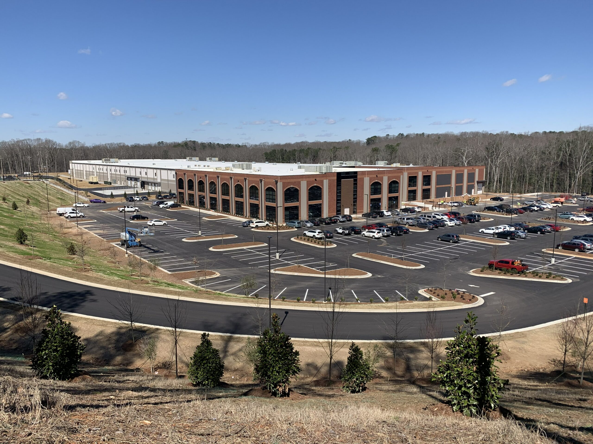
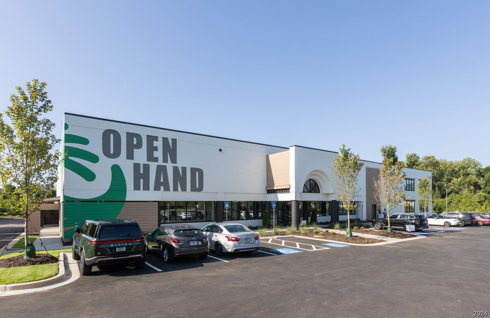
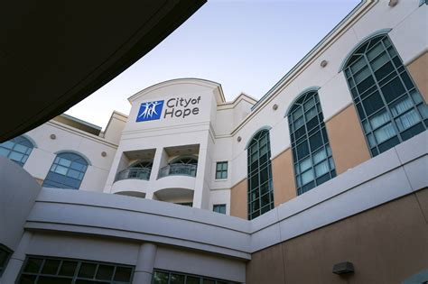
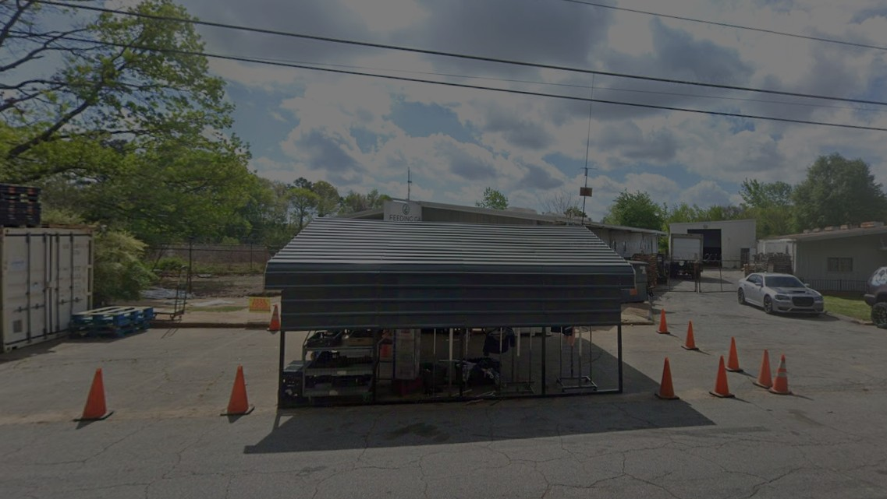
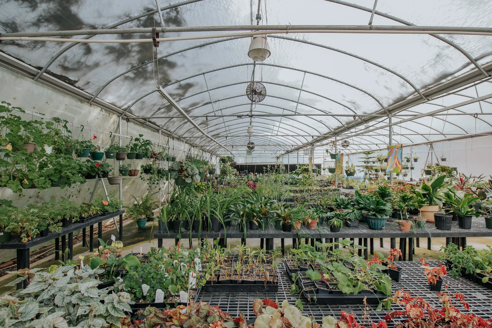
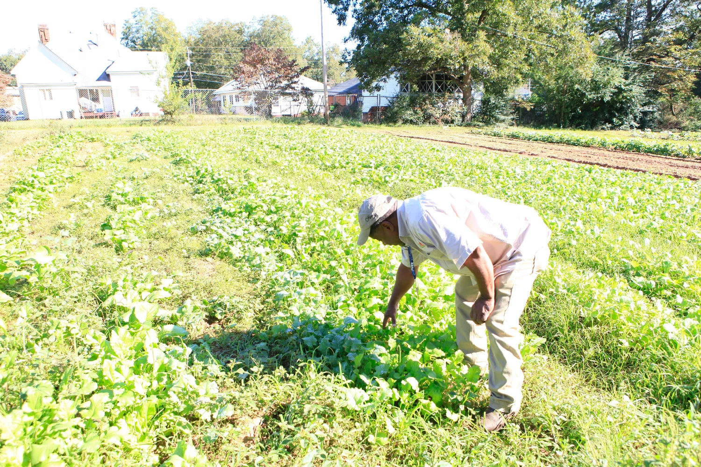
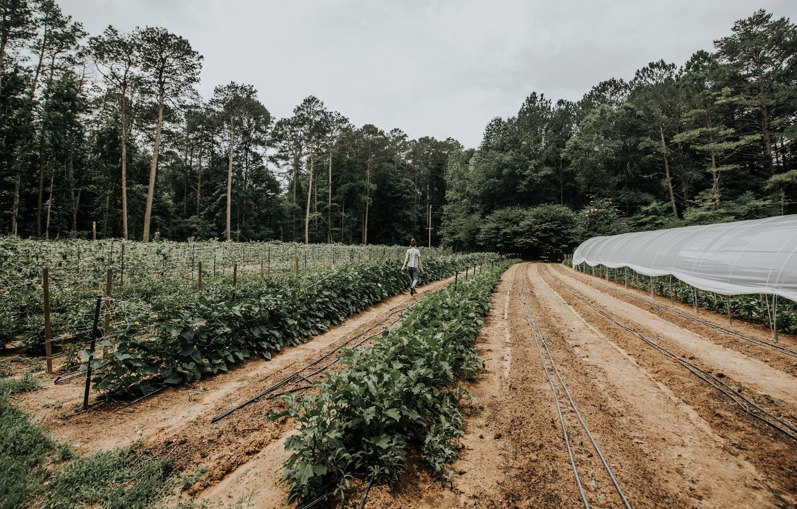
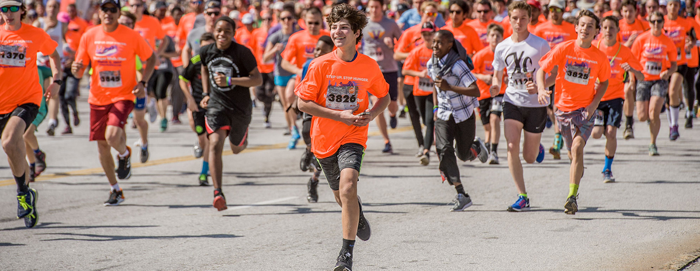

Resources
Find helpful local resources for things such as food and events!
// https://www.youtube.com/watch?v=2uKbSQ0mXGA helped me learn aside
Food Assistance & Education

Atlanta Community Food Bank (East Point)
As the main hub for hunger relief services, they provide Hunger Education Workshops as well as manage a network of more than 700 partners. They have direct Community Food Centers in Atlanta, Jonesboro, Marietta, and Stone Mountain.
View Resource

Open Hand Atlanta (Atlanta)
Offers nutrition education and medically customized meals to people with disabilities or long-term medical conditions.
View Resource

HOPE Atlanta Women's Community Kitchen (Atlanta)
Offers hot meals and assistance to homeless women and children.
View Resource

Vegantry (Atlanta)
A local nonprofit that offers health and wellness seminars and plant-based, allergy-friendly grocery assistance.
View Resource
Gardens, Farms & Workshops

Food Well Alliance (Atlanta)
A major resource for community gardeners and urban farmers. They host the Plant. Eat. Repeat. workshop series and annual events like the Fruit Tree Sale.
View Resource

Metro Atlanta Urban Farm (College Park)
A community-based farm that helps families grow their own food by providing food giveaways, health education, and agricultural training.
View Resource

Atlanta Botanical Garden
Partners with local groups to host gardening classes, Tai Chi sessions, and children's environmental programming.
View Resource

Global Growers Network (Decatur)
Connects resettled refugees and local producers to farmland and sustainable agriculture resources, managing several community gardens and orchards in DeKalb County.
View Resource
Events

Growing Communities Workshops
2-day workshops for community garden leaders hosted by Food Well Alliance and the American Community Gardening Association.
View Resource

Hunger Walk/Run
An annual event hosted by the Atlanta Community Food Bank to raise funds and awareness for local hunger-relief efforts.
View Resource